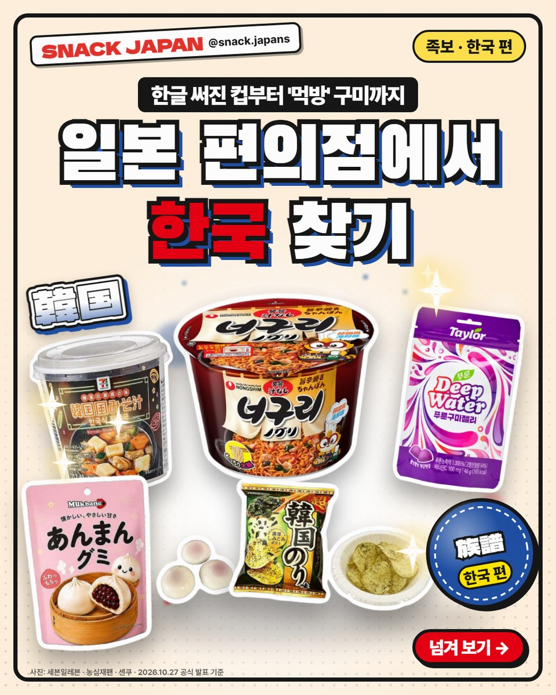
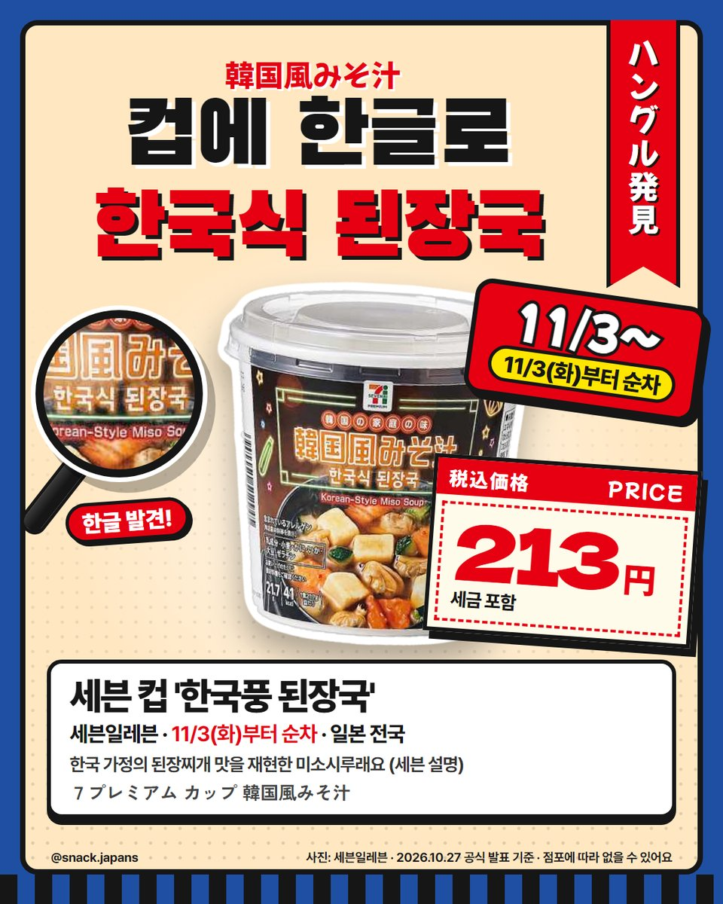
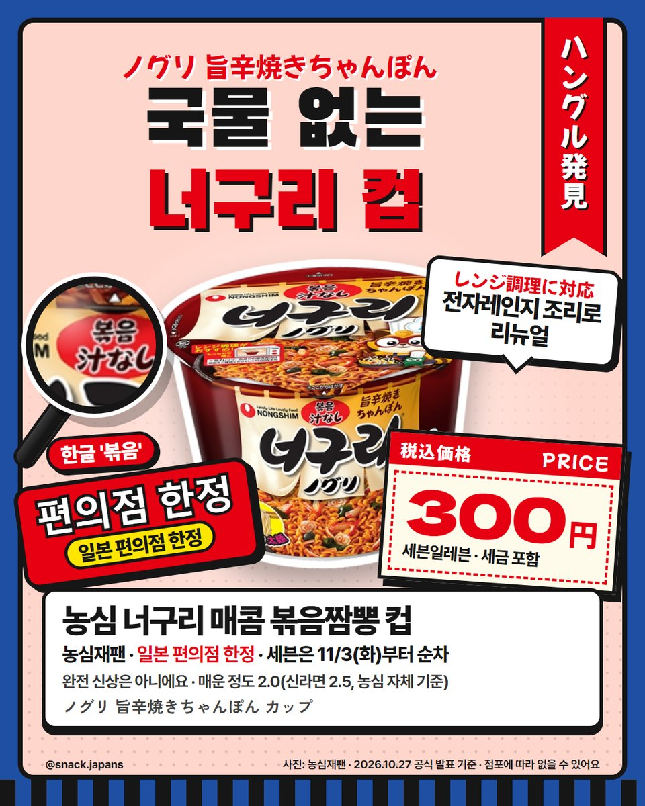
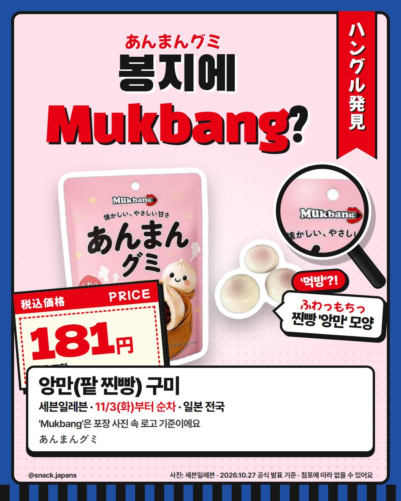
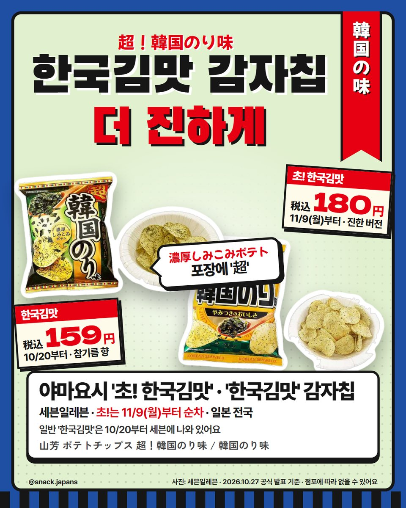
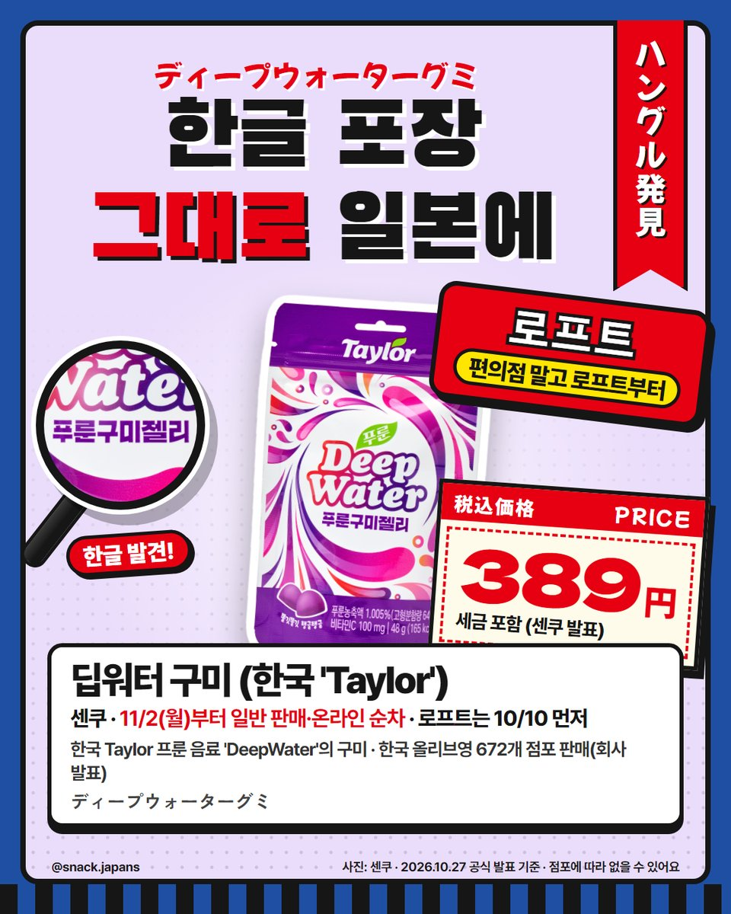
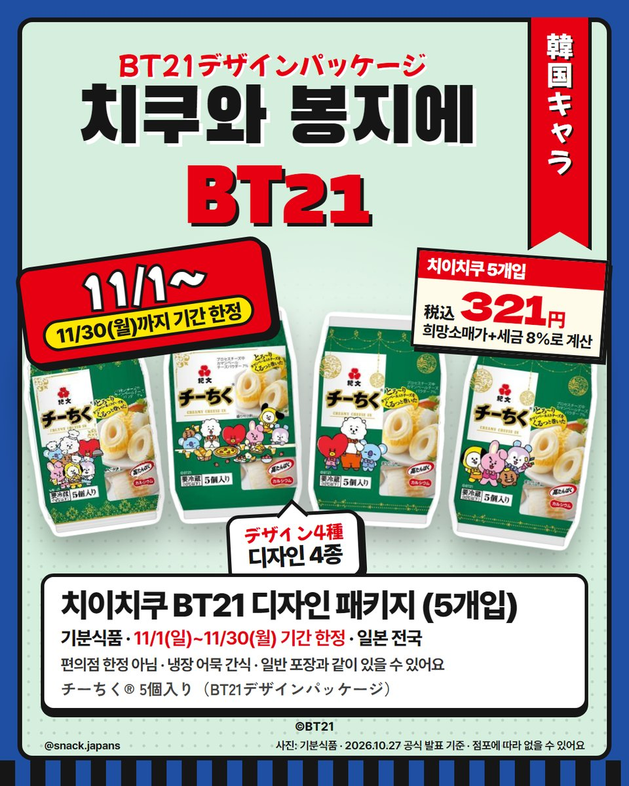
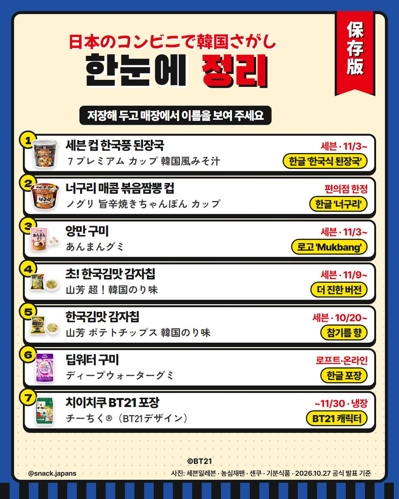

일본 편의점 한국 맛 총정리, 한글 써진 된장국 컵부터 'Mukbang' 구미까지
일본 세븐일레븐 컵에 한글로 '한국식 된장국'?! 일본 편의점 속 한국 맛, 공식 확인한 것만 모았어요 🇰🇷
일본 편의점 컵에 한글이?! 🇰🇷
일본 세븐일레븐 컵에 한글로 '한국식 된장국'이라고 적혀 있더라고요.
일본 편의점 속 한국 맛, 공식 자료로 확인한 것만 모아 봤어요.
여행 가기 전에 저장해 두세요!


1. 세븐 컵 '한국풍 된장국'
- 컵에 한글 '한국식 된장국', 영어 'Korean-Style Miso Soup'
- 한국 가정의 된장찌개 맛을 재현한 미소시루래요 (세븐 설명)
- 11/3(화)부터 순차, 일본 전국 세븐일레븐
- 일본 이름: ７プレミアム カップ 韓国風みそ汁

2. 농심 너구리 매콤 볶음짬뽕 컵
- 국물 없는 타입, 일본 편의점 한정이에요
- 완전 신상은 아니고, 전자레인지 조리에 맞춰 리뉴얼했대요 (농심재팬 발표)
- 매운 정도 2.0(신라면 2.5) — 농심 자체 기준이에요
- 세븐일레븐은 11/3(화)부터 순차
- 일본 이름: ノグリ 旨辛焼きちゃんぽん カップ

3. 앙만(팥 찐빵) 구미
- 찐빵 '앙만' 모양 구미, 포장 문구 「ふわっもちっ」
- 봉지 맨 위 로고가 'Mukbang' (포장 사진 기준)
- 11/3(화)부터 순차, 일본 전국 세븐일레븐
- 일본 이름: あんまんグミ

4. 야마요시 '초! 한국김맛' 감자칩
- 10/20부터 세븐에 있는 '한국김맛'의 진한 버전
- 포장에 「超」「濃厚しみこみポテト」
- 11/9(월)부터 순차, 일본 전국 세븐일레븐
- 일본 이름: 山芳 ポテトチップス 超！韓国のり味

5. 딥워터 구미 (한국 'Taylor')
- 한국 Taylor 프룬 음료 'DeepWater'에서 나온 구미
- 포장에 한글 '푸룬구미젤리'가 그대로
- 편의점이 아니라 로프트에서 10/10 먼저, 11/2(월)부터 일반 판매·온라인 순차
- 일본 이름: ディープウォーターグミ

6. 치이치쿠 BT21 디자인 패키지
- 기분식품의 치즈 든 치쿠와(어묵) 간식에 BT21 디자인 4종
- 11/1(일)~11/30(월) 기간 한정, 일본 전국 (냉장)
- 편의점 한정은 아니고, 일반 포장과 같이 놓여 있을 수 있어요
- 일본 이름: チーちく® 5個入り（BT21デザインパッケージ）

7. 더 있어요
- 지난번 소개한 일본 속 한국: 세븐 컵 육개장·곰탕(10/27부터), 삼계탕 파우치(사이타마·지바·도쿄·가나가와 세븐만)
- 반대로 한국에 간 일본 과자: 자가리코 한국 정식 출시, 죽순마을 한국 CU
- 그리고 한국 CU엔 일본 랑그드샤가 10/28부터 나왔어요
총평
- 기준: 세븐일레븐·농심재팬·센쿠·기분식품 공식 자료, 10월 27일 확인
- 가격: 사진 카드에 정리해 뒀어요
- 참고: 점포에 따라 없을 수 있어요. 아직 먹어 보지 않아서 맛 이야기는 빼고 공식 설명만 옮겼어요
- 추천: 일본 여행 중 한국 맛이 그리운 분, 편의점 구경 좋아하는 분
일본에서 본 한국 맛, 또 있었어요? 🇰🇷
사진: 세븐일레븐 · 농심재팬 · 센쿠 · 기분식품
©BT21